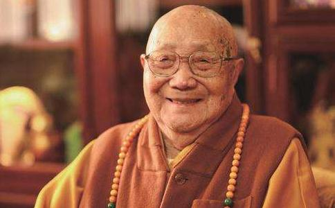

1、报恩寺 本焕长老，湖北新洲人，俗姓张，名志山，出生于1907年9月。本焕长老一生遍访天下高僧为师，游历四方名寺
出身寒家的本焕长老小时候上过私塾，勤而好学，慧根独具，年仅12岁便读完四书五经，深谙孔孟之道，领会诗书之法。后因严父辞世，无奈被迫辍学做了徒工。因感时政腐败，公理不张，常到报恩寺听传圣法师讲经
1930年正月十五，本焕长老告别家人，来到报恩寺传圣法师门下，剃度为僧，法号本幻。从此开始了芒鞋布衣的修行生涯。
2、宝通寺1930年2月，传圣法师推荐他到武昌宝通寺受戒。
到了宝通寺，长老先接受了
宝通寺传戒师持松法师是两次留日的高僧，他指出，要领悟到佛法的
1930年7月，长老前往扬州高旻寺拜来果老和尚为师，跟随老和尚长达七年。高旻寺宗风严谨，来果和尚更是道高德重。在此七年中，长老非常勤勉，深受来果老和尚器重。
来果和尚主张
为促智慧增长，顿悟佛法真谛，长老效仿古人以头悬梁，九十一天坐禅不倒单，其非凡的意志，成为全寺同门之楷模。
4、 1937年，长老时年三十。发愿效仿
长老手持一个小木凳，凳子上燃一柱香，三步一拜，虔心跪行，途径漕河、太行山、狼牙山、太白山等地，全程三百多里，一路上风餐露宿，披星戴月，栉风沐雨，任手掌破裂，仍虔诚叩拜，足足拜了六个月，最终达到了五台山。长老接着又拜五个台顶。从北台起，同样三步一拜一柱香，拜五个台子。五台高度均在海拔2800米以上，秋末山西高山之巅自然是入冬较早，有时白天晴朗，夜间便飘起雪花，
每当有人不解地问起长老，他总是说：“为持戒律，修
从1938年开始，
他效仿佛陀刺血为墨书写经书。当时生活原本就很清苦，他坚持每天用手指或舌头的鲜血，恭写《
后来，长老又效仿达摩面壁参禅之举，于五台山
时值抗日战争时期，日本军国主义侵略中国，占领五台山。本焕师爱国爱教，常常利用监院身份，支持抗日战争。并以仁者之勇，救八路军军官于虎口之中，并得到八路军司令部的嘉奖。长老还以
1948年1月，母亲病危，长老立即赶回湖北老家。由于自己是出家人，既要做到心不离佛，身不离佛，又要行孝报恩。因此，他白天在家中为母亲端茶送水，喂药喂饭，晚上则回到报恩寺，攻读
母亲往生后，本焕师借用一间祠堂连续三天抄写《金刚经》。为了
1948年7月，中国近代极富传奇色彩的一代高僧
南华寺是六祖慧能弘扬“南宗禅法”的道场，后又形成临济、曹洞、云门、
长老于同年11月接法于虚云宗下，成为
1949年正月初八，本焕大师正式住锡南华寺。
9、狱中宗风 1958年，正值长老升座南华，致力于弘法之际，却不幸蒙冤入狱。面对如此变故，长老心
长老终于在73岁古稀之龄时获彻底平反，得以重返佛门。1980年，本焕长老应仁化县政府邀请到该县丹霞山恢复别传寺。
当时，建于明末、兴于清初、毁于民国的别传寺已是断壁残垣，不复往日之貌。长老受命于国家百业待兴之时，筹款建庙之艰辛可想而知，经过本老四年的苦心营造，终于聚沙成塔，募化善款近千万，重修殿堂5000余平方米，并将重要文物修缮一新。当时
群峰罹立似儿孙，高坐丹霞一寺尊。
一炉柏子参禅味，七碗松涛觅梦痕。
未得偏堂行集看，愿将半偈镇山门。
11、恢复光孝寺 随后，赵朴初会长和广东省
光孝寺乃初祖达摩东来创立之
长老住锡弘法寺，心念天下众生，以普贤菩萨十大行愿作为目标，追求“广修供养”、“普度众生”之菩萨境界。他将“不为自己求安乐，但愿众生得离苦”之禅门宝训书成条幅，悬于丈室。将自己的血经本《
本焕长老一生弘扬佛法，四处筹建寺院，恢复禅宗祖庭。1984年在深圳筹建弘法寺；1986年恢复并重建光孝寺；1989年重建湖北武汉报恩寺；1995年重建禅宗四祖祖庭正觉禅寺；1996年重建南雄莲开寺；如今，又在百丈山重建百丈禅寺。经他重建和修复的寺院道场规模之大，辉煌的程度可谓前无古人。他给众多
德高望重的本焕禅师，在过百岁高龄时还如期参加了2006年举行的第一届世界佛教论坛大会，并参与大会为世界和谐和人类福祉祈祷。在他的倡导下，弘法寺捐出百万巨资，帮助创作了中国首部大型佛教交响乐——《神州和乐》，并为世界佛教论坛献演。至今，《神州和乐》已经成为佛教界的一大品牌在国内外出演，进行佛教文化交流。
本焕禅师在佛教论坛现场呼吁人类遵循佛陀的教导，实现人心和善，
2010年，本焕长老当选中国佛教协会名誉会长。百岁高龄的本焕长老
中国佛门泰斗本焕长老于2012年4月2日零点三十六分在弘法寺安详示寂，世寿106岁，戒腊83夏。长老一生护国护教，肩挑如来家业，荣辱无动，毁誉安然，寿享遐龄，